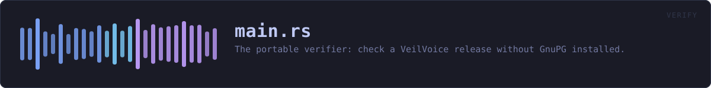

crates/veilvoice-verify/src/main.rs
veilvoice-verify · 778 lines · read the source
The portable verifier: check a VeilVoice release without GnuPG installed.
What this is for
Verifying a download by hand needs GnuPG and a SHA-256 tool. That is four commands and two dependencies, and on Windows it is usually neither. This is one binary that does the same checks with nothing else installed: the signing key and its fingerprint are compiled into it.
The one thing it cannot embed
It cannot carry the expected hash of the file it is checking. A file cannot contain its own digest -- writing the digest in changes the file, which changes the digest. So the hash has to come from outside, and there are exactly two places it can come from. They prove different things, and this tool is careful never to blur them:
From the published SHA256SUMS -- whose signature this tool checks against the embedded key. A match proves the download is intact: it is byte-for-byte the file that was published, not a corrupted or substituted one. It says nothing about whether that file corresponds to the source, because whoever published it produced both the file and the list.
Typed in by hand, from a hash somebody else produced by building the same tagged source themselves. A match proves something strictly stronger: that the published binary is what that source compiles to, on a machine that is not the publisher's. That is reproducibility, and it is the only check that does not ultimately rest on trusting whoever signed the release.
Most people want the first. The second is what makes the first worth anything, and it needs somebody other than the author to have done a build. docs/REPRODUCIBLE_BUILDS.md says how.
What it does not do
It does not download anything -- this project has no network code and this binary is not the exception. Fetch the files however you like; this reads them from disk. It does not install anything, and it writes nothing.
In plain words
This is the small program you can check a download with before trusting anything else here.
It is deliberately tiny and it is on its own: no window, no other pieces, and it does not need any other software installed -- not even the usual signature program. That matters because it is the first thing you run, and the point of it is to be small enough to be worth reading.
Double-click it and it looks for a downloaded release nearby and checks it. Give it arguments and it does exactly what you asked.
WHAT THIS FILE CONTAINS
778 lines defining 17 functions (0 public), 0 types and 2 constants. Everything below is read out of the source, so it cannot disagree with the code.
WHAT CALLS WHAT
The functions this file defines, and the calls between them. An edge means the callee's name appears, called, inside the caller's body — a syntactic reading, not a type-resolved one.
The same graph as Mermaid source
%%{init: {"theme":"base","themeVariables":{"background":"#1a1b26","primaryColor":"#1f2335","primaryTextColor":"#c0caf5","primaryBorderColor":"#7aa2f7","secondaryColor":"#16161e","tertiaryColor":"#16161e","lineColor":"#737aa2","textColor":"#c0caf5","mainBkg":"#1f2335","nodeBorder":"#7aa2f7","clusterBkg":"#16161e","clusterBorder":"#2f3549","fontFamily":"ui-monospace, SFMono-Regular, Consolas, monospace","fontSize":"14px"}}}%%
flowchart TD
n_embedded_key["embedded_key<br/>line 81"]
n_sha256_file["sha256_file<br/>line 92"]
n_verify_detached["verify_detached<br/>line 97"]
n_good["good<br/>line 203"]
n_fail["fail<br/>line 214"]
n_deny["deny<br/>line 228"]
n_read_text["read_text<br/>line 247"]
n_command_key["command_key<br/>line 251"]
n_command_sums["command_sums<br/>line 270"]
n_command_file_against_sums["command_file_against_sums<br/>line 308"]
n_command_file_against_hash["command_file_against_hash<br/>line 392"]
n_command_hash["command_hash<br/>line 444"]
n_take_value["take_value<br/>line 461"]
n_command_release["command_release<br/>line 477"]
n_command_auto["command_auto<br/>line 558"]
n_wait_before_the_window_closes["wait_before_the_window_closes<br/>line 640"]
n_main["main<br/>line 647"]
n_command_auto --> n_command_file_against_sums
n_command_auto --> n_deny
n_command_file_against_hash --> n_deny
n_command_file_against_hash --> n_good
n_command_file_against_hash --> n_sha256_file
n_command_file_against_sums --> n_deny
n_command_file_against_sums --> n_embedded_key
n_command_file_against_sums --> n_good
n_command_file_against_sums --> n_read_text
n_command_file_against_sums --> n_sha256_file
n_command_file_against_sums --> n_verify_detached
n_command_hash --> n_deny
n_command_hash --> n_sha256_file
n_command_key --> n_deny
n_command_key --> n_embedded_key
n_command_release --> n_command_file_against_sums
n_command_release --> n_command_sums
n_command_release --> n_deny
n_command_release --> n_fail
n_command_sums --> n_deny
n_command_sums --> n_embedded_key
n_command_sums --> n_good
n_command_sums --> n_read_text
n_command_sums --> n_verify_detached
n_main --> n_command_auto
n_main --> n_command_file_against_hash
n_main --> n_command_file_against_sums
n_main --> n_command_hash
n_main --> n_command_key
n_main --> n_command_release
n_main --> n_command_sums
n_main --> n_deny
n_main --> n_take_value
n_main --> n_wait_before_the_window_closes
click n_embedded_key href "https://github.com/tilas01/veilvoice/blob/main/crates/veilvoice-verify/src/main.rs#L81" "open the source"
click n_sha256_file href "https://github.com/tilas01/veilvoice/blob/main/crates/veilvoice-verify/src/main.rs#L92" "open the source"
click n_verify_detached href "https://github.com/tilas01/veilvoice/blob/main/crates/veilvoice-verify/src/main.rs#L97" "open the source"
click n_good href "https://github.com/tilas01/veilvoice/blob/main/crates/veilvoice-verify/src/main.rs#L203" "open the source"
click n_fail href "https://github.com/tilas01/veilvoice/blob/main/crates/veilvoice-verify/src/main.rs#L214" "open the source"
click n_deny href "https://github.com/tilas01/veilvoice/blob/main/crates/veilvoice-verify/src/main.rs#L228" "open the source"
click n_read_text href "https://github.com/tilas01/veilvoice/blob/main/crates/veilvoice-verify/src/main.rs#L247" "open the source"
click n_command_key href "https://github.com/tilas01/veilvoice/blob/main/crates/veilvoice-verify/src/main.rs#L251" "open the source"
click n_command_sums href "https://github.com/tilas01/veilvoice/blob/main/crates/veilvoice-verify/src/main.rs#L270" "open the source"
click n_command_file_against_sums href "https://github.com/tilas01/veilvoice/blob/main/crates/veilvoice-verify/src/main.rs#L308" "open the source"
click n_command_file_against_hash href "https://github.com/tilas01/veilvoice/blob/main/crates/veilvoice-verify/src/main.rs#L392" "open the source"
click n_command_hash href "https://github.com/tilas01/veilvoice/blob/main/crates/veilvoice-verify/src/main.rs#L444" "open the source"
click n_take_value href "https://github.com/tilas01/veilvoice/blob/main/crates/veilvoice-verify/src/main.rs#L461" "open the source"
click n_command_release href "https://github.com/tilas01/veilvoice/blob/main/crates/veilvoice-verify/src/main.rs#L477" "open the source"
click n_command_auto href "https://github.com/tilas01/veilvoice/blob/main/crates/veilvoice-verify/src/main.rs#L558" "open the source"
click n_wait_before_the_window_closes href "https://github.com/tilas01/veilvoice/blob/main/crates/veilvoice-verify/src/main.rs#L640" "open the source"
click n_main href "https://github.com/tilas01/veilvoice/blob/main/crates/veilvoice-verify/src/main.rs#L647" "open the source"
classDef helper fill:#1f2335,stroke:#bb9af7,color:#c0caf5
class n_embedded_key,n_sha256_file,n_verify_detached,n_good,n_fail,n_deny,n_read_text,n_command_key,n_command_sums,n_command_file_against_sums,n_command_file_against_hash,n_command_hash,n_take_value,n_command_release,n_command_auto,n_wait_before_the_window_closes,n_main helperThis site loads no third-party script, so it cannot run Mermaid; the diagram above is the same nodes and edges drawn by the generator instead. GitHub renders the source below directly.
ITEMS
| Item | Line | Documentation |
|---|---|---|
embedded_key fn | 81 | The embedded key, with its fingerprint checked against FINGERPRINT. |
sha256_file fn | 92 | SHA-256 of a file, as this program's Result<_, String>. |
verify_detached fn | 97 | Verify a detached signature, as this program's Result<_, String>. |
USAGE const | 101 | |
EXPLAIN const | 156 | |
good fn | 203 | |
fail fn | 214 | A failure that is not a refusal: something did not happen, rather than something was checked and found wrong. |
deny fn | 228 | Every refusal goes through here, so every refusal names the check. |
read_text fn | 247 | |
command_key fn | 251 | |
command_sums fn | 270 | |
command_file_against_sums fn | 308 | |
command_file_against_hash fn | 392 | |
command_hash fn | 444 | |
take_value fn | 461 | |
command_release fn | 477 | Fetch a release and check it, in one step. |
command_auto fn | 558 | Find a release near the user and check it, with nothing else to type. |
wait_before_the_window_closes fn | 640 | Keep the window open when there was nobody watching a terminal. |
main fn | 647 |